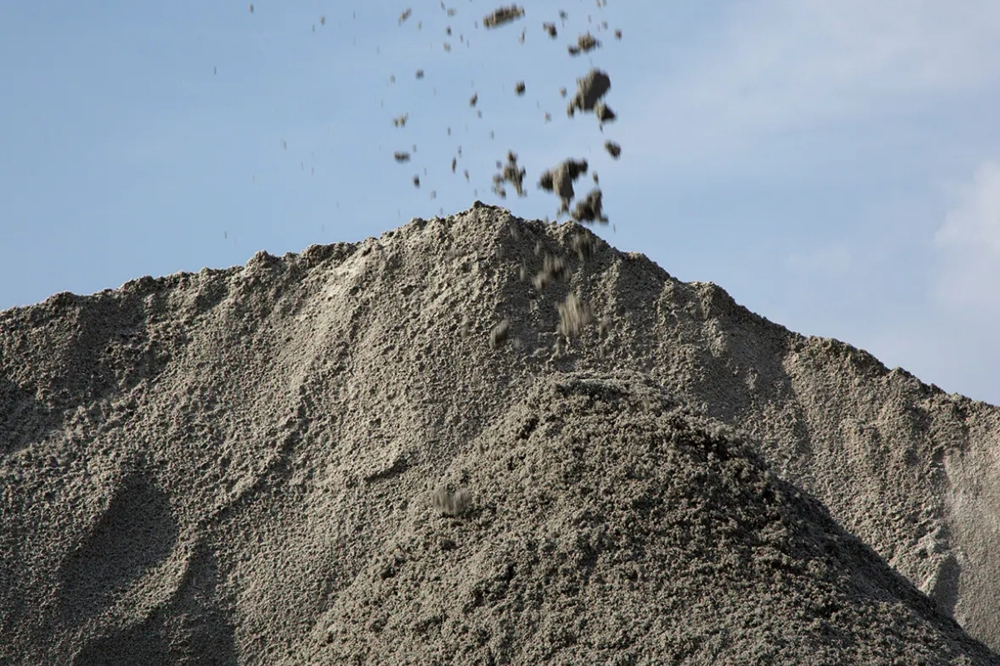

M-Sand (Manufactured Sand)
A crushed aggregate produced from hard rock stone, M-sand is a superior alternative to river sand. We ensure the highest quality through rigorous testing, including:
Testing includes
- Sieve analysis
- Silt content
- Workability
- Compressive strength tests